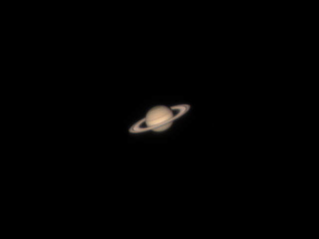

土星

设备: Explore Scientific 152/1900 mm 马卡 + EXOS-2 Goto 赤道仪
相机: ZWO ASI385MC
时间: 2022-07-11 凌晨
地点: 南阳台
由于南阳台观测空间有限, 手动控制电跟拍摄素材
将天顶镜拆下来换成两个延焦筒, 固定行星相机时还要稍微外撤一点才能刚好对焦
步骤:
- 使用 PIPP 对行星进行稳定居中, 转换为 tif 格式保存
- 将全部 tif 格式帧使用 AS!3 打开, 配置行星堆叠参数, 启用锐化
- 最终得到本次的成果
- 原本录制了 20 段视频, 每段视频 120s, 最终只用了一段视频就达到了不错的效果也是很让人意外
- 过几个月要补拍上次不那么成功的木星